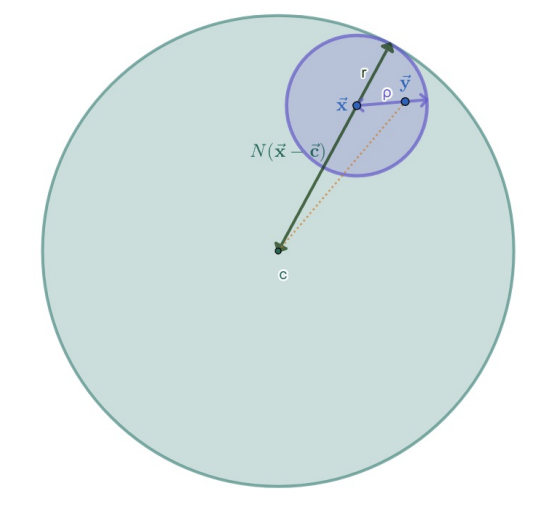

Fonctions de deux variables¶
1.Topologie de \(\mathbb{R}^2\)¶
一般来说, 拓扑是指一组被称为开集的子集集合
在此, 拓扑来源于 赋范向量空间 (espace vectoriel normé) 的结构, 即具有范数 (norme)
1.1 Normé sur \(\mathbb{R}^2\)¶
-
Définition: Norme
范数是一个函数 \(N\) , 将向量空间中的每个向量映射到一个非负实数: \(N: \mathbb{R}^2 \to \mathbb{R}_{+}\)
- 非负性: \(\forall \vec{x} \in \mathbb{R}^2, (N(\vec{x}) = 0 \to \vec{x} = \vec{0})\)
- 齐次性: \(\forall (\lambda, \vec{x}) \in \mathbb{R} \times \mathbb{R}^2, N(\lambda \vec{x}) = |\lambda| N(\vec{x})\)
- 满足三角不等式: \(\forall (\vec{x},\vec{y}) \in (\mathbb{R}^2)^2, N(\vec{x}+\vec{y}) \leq N(\vec{x}) + N(\vec{y})\)
Extra-note
我们不需要强调函数值为非负实数, 因为可以用定义中的三个点推出:
如果 \(\mathbb{R}^2\) 具有一个范数 \(N\) , 我们可以使用向量空间的结构来定义一个距离:
这个函数具有与范数定义中的正定性和三角不等式相似的性质:
- &\forall (\vec{x},\vec{y}) \in \mathbb{R}^2 \times \mathbb{R}^2, (d_N(\vec{x},\vec{y}) = 0 \Rightarrow \vec{x} = \vec{y})&
- \(forall \vec{x}, \vec{y}, \vec{z} \in \mathbb{R}^2, d_N(\vec{x},\vec{z}) \leq d_N(\vec{x},\vec{y}) + d_N(\vec{y},\vec{z})\)
但需要注意的是, 距离的函数没有与齐次性对应的等价条件, 所以此函数不一定来源于范数
距离是一种更一般的概念, 不需要向量空间的结构
范数一般记为:
Proposition
设 \(N\) , 是 \(\mathbb{R}^2\) 上的一个范数, 则其满足逆三角不等式:
设 \((\vec{x},\vec{y}) \in \mathbb{R}^2 \times \mathbb{R}^2\), 有:
命题得证
Exemple
对于任意 \( \vec{x} = (x_1, x_2) \in \mathbb{R}^2 \), 定义以下三种常见的范数:
证明它们满足范数定义中的三个性质
设 \( \vec{x} = (x_1, x_2) \), \( \vec{y} = (y_1, y_2) \in \mathbb{R}^2, \lambda \in \mathbb{R} \)
非负性:
- \( \|\vec{x}\|_1 = 0 \iff |x_1| + |x_2| = 0 \iff x_1 = 0, x_2 = 0 \iff \vec{x} = (0,0) \)
- \( \|\vec{x}\|_2 = 0 \iff \sqrt{x_1^2 + x_2^2} = 0 \iff x_1^2 + x_2^2 = 0 \iff x_1 = 0, x_2 = 0 \iff \vec{x} = (0,0) \)
- \( \|\vec{x}\|_\infty = 0 \iff \max\{|x_1|, |x_2|\} = 0 \iff x_1 = 0, x_2 = 0 \iff \vec{x} = (0,0) \)
齐次性:
- \( \|\lambda \vec{x}\|_1 = |\lambda x_1| + |\lambda x_2| = |\lambda| (|x_1| + |x_2|) = |\lambda| \|\vec{x}\|_1 \)
- \( \|\lambda \vec{x}\|_2 = \sqrt{\lambda^2 x_1^2 + \lambda^2 x_2^2} = |\lambda| \sqrt{x_1^2 + x_2^2} = |\lambda| \|\vec{x}\|_2 \)
- \( \|\lambda \vec{x}\|_\infty = \max\{|\lambda x_1|, |\lambda x_2|\} = |\lambda| \max\{|x_1|, |x_2|\} = |\lambda| \|\vec{x}\|_\infty \)
三角不等式:
- \( \|\vec{x} + \vec{y}\|_1 = |x_1 + y_1| + |x_2 + y_2| \leq |x_1| + |y_1| + |x_2| + |y_2| = \|\vec{x}\|_1 + \|\vec{y}\|_1 \)
- \( \|\vec{x} + \vec{y}\|_\infty = \max\{|x_1 + y_1|, |x_2 + y_2|\} \leq \max\{|x_1| + |y_1|, |x_2| + |y_2|\} \leq \max\{|x_1|, |x_2|\} + \max\{|y_1|, |y_2|\} = \|\vec{x}\|_\infty + \|\vec{y}\|_\infty \)
-
对于 \( \|\cdot\|_2 \) 范数, 使用柯西-施瓦茨不等式:
\[ (x_1 y_2 - x_2 y_1)^2 \geq 0 \Rightarrow 2x_1 y_1 + 2x_2 y_2 \leq x_1^2 + x_2^2 + y_1^2 + y_2^2 \]由此得到:
\[ \|\vec{x} + \vec{y}\|_2 = \sqrt{(x_1 + y_1)^2 + (x_2 + y_2)^2} \leq \sqrt{x_1^2 + x_2^2} + \sqrt{y_1^2 + y_2^2} = \|\vec{x}\|_2 + \|\vec{y}\|_2 \]
\( \|\cdot\|_2 \) 也被称为欧几里得范数, 因为它来源于如下内积:
柯西-施瓦茨不等式可写为:
利用内积, 可以重写三角不等式的证明:
与其他范数不同, 欧几里得范数满足平行四边形恒等式:
但对于 \( \|\cdot\|_1 \) 和 \( \|\cdot\|_\infty \) , 存在某些 \( \vec{x}, \vec{y} \) 使得:
Fréchet-von Neumann-Jordan 定理表明, 如果一个范数 \( N \) 满足平行四边形恒等式, 则可以定义一个与其兼容的内积, 例如:
这说明 \( \|\cdot\|_2 \) 范数源自一个内积, 而 \( \|\cdot\|_1 \) 和 \( \|\cdot\|_\infty \) 不是由内积导出的范数
-
Définition
设 \( N \) 是 \(\mathbb{R}^2\) 上的一个范数, \(\vec{c} \in \mathbb{R}^2\), \( r \in \mathbb{R}^*_+ \)
- 开球 (boule ouverte): 以 \(\vec{c}\) 为中心, \( r \) 为半径的 开球 (对于范数 \( N \)) 定义为:
\[ \mathcal{B}_N (\vec{c}; r) := \{ \vec{x} \in \mathbb{R}^2 \mid N (\vec{x} - \vec{c}) < r \} \]- 闭球 (boule fermée): 以 \(\vec{c}\) 为中心, \( r \) 为半径的 闭球 (对于范数 \( N \)) 定义为:
\[ \mathcal{B}_{f,N} (\vec{c}; r) := \{ \vec{x} \in \mathbb{R}^2 \mid N (\vec{x} - \vec{c}) \leq r \} \]- 球面 (sphère): 以 \(\vec{c}\) 为中心, \( r \) 为半径的 球面 (对于范数 \( N \)) 定义为:
\[ \mathcal{S}_N (\vec{c}; r) := \{ \vec{x} \in \mathbb{R}^2 \mid N (\vec{x} - \vec{c}) = r \} \]
Extra-note
以 \(\vec{c}\) 为中心的球与以 \(\vec{0}\) 为中心的球通过平移相重叠:
下图为三种常见范数对应的单位球, 即以 \(\vec{0}\) (为中心, 半径为 1 的开球)

需要注意的是: 如果我们知道与某个范数 \( N \) 相关的球面 \( S \) , 那么该范数就可以被完全确定
对于所有非零向量 \(\vec{x} \in \mathbb{R}^2 \setminus \{ \vec{0} \}\), 由于 \( N(\vec{x}) > 0 \), 所以存在唯一的 \( \lambda \in \mathbb{R}_+^* \) 使得: \(\lambda N(\vec{x}) = 1\)
由于 \( N(\lambda \vec{x}) = |\lambda| N(\vec{x}) = \lambda N(\vec{x}) = 1 \),
可知 \( \lambda \vec{x} \in S \) , 恰好落在球面 \( S \) 上
无论选择何种范数 \( N \), 单位球 \( B \) 都满足以下性质:
这意味着, 对于任意 \(\lambda \in [0,1]\), 点 \((1 - \lambda) \vec{x} + \lambda \vec{y}\) 位于 \( B \) 上
换句话说, 单位球是凸集
我们同样可以证明其逆命题也成立:
如果 \( C \) 是 \(\mathbb{R}^2\) 的一个子集, 且满足以下条件 \( C \) 包含原点 \( \vec{0} \) 且 \( C \) 是凸集
那么, 必定存在一个范数 \( N_C \), 使得单位球满足 \(B_{N_C} (\vec{0}; 1) \subseteq C \subseteq B_{f, N_C} (\vec{0}; 1)\)
-
Définition
设 \( N_1 \) 和 \( N_2 \) 是 \(\mathbb{R}^2\) 上的两个范数
我们称 \( N_1 \) 受控 (dominée) 于 \( N_2 \), 或者说 \( N_2 \) 比 \( N_1 \) 更精细 (plus fine), 记作: \(N_1 = O(N_2)\)
如果存在一个常数 \( K \in \mathbb{R}_+^* \) , 使得:\[ \forall \vec{x} \in \mathbb{R}^2, N_1(\vec{x}) \leq K N_2(\vec{x}) \]如果 \( N_1 = O(N_2) \) 且 \( N_2 = O(N_1) \), 则称 \( N_1 \) 和 \( N_2 \) 是具有等价关系 ("\(\sim\)") 的范数
Extra-note
以上定义表明, 如果 \( \vec{x} \in B_{N_2} (\vec{0}, 1) \), 那么 \( \vec{x} \in B_{N_1} (\vec{0}, K) \), 即 \( B_{N_2} (\vec{0}, 1) \subseteq B_{N_1} (\vec{0}, K) \)
更一般地说,
只需取 \( \rho := \frac{r}{K} > 0 \) 即可证明
Proposition
\(\mathbb{R}^2\) 上的三种常见范数是等价的 (例中的三个函数)
即:
对于任意 \(\vec{x} \in \mathbb{R}^2\), 设 \(\vec{x} = (x_1, x_2)\), 我们有以下关系:
这说明 \(\|\cdot\|_{\infty} \sim \|\cdot\|_1\) 且 \(\|\cdot\|_{\infty} \sim \|\cdot\|_2\) , 因此三种范数是等价
命题得证
我们还可以用单个不等式链来证明:
对于所有 \( r > 0 \), 这些范数的单位球满足以下包含关系:
-
Définition
集合 \( X \) 是 \( \mathbb{R}^2 \) 的一个有界子集, 当且仅当:
\[ \exists M \in \mathbb{R}^+, \forall \vec{x} \in X, \|\vec{x}\|_2 \leq M \]\( X \) 是有界的, 当且仅当:
\[ \forall r > 0, \exists \lambda > 0, X \subseteq \lambda B_{\|\cdot\|_2}(\vec{0}, r) = \{ \lambda \vec{x} \mid \vec{x} \in B_{\|\cdot\|_2}(\vec{0}, r) \} = B_{\|\cdot\|_2}(\vec{0}, \lambda r) \]集合 \( \Omega \) 是 \( \mathbb{R}^2 \) 的开集, 当且仅当:
\[ \forall \vec{x} \in \Omega, \exists r \in \mathbb{R}_+^*, B_{\|\cdot\|_2}(\vec{x}, r) \subseteq \Omega \]
Extra-note
通常我们会说 “设 \( \Omega \) 为 \( \mathbb{R}^2 \) 的一个开集”, 其中隐含的意思是“\( \Omega \) 是一个开子集”, 在法语中用阳性形式表达
根据命题, 若使用一个与 \( \|\cdot\|_2 \) 等价的范数来定义上述概念, 所得的定义仍然是一致的
Exemple
设 \( a, b, c, d \in \mathbb{R} \) 且 \( a < b \) 且 \( c < d \), 那么开区间 \( ]a, b[ \times ]c, d[ \) 是 \( \mathbb{R}^2 \) 的一个开集
对于任意 \( \vec{x} = (x_1, x_2) \in ]a, b[ \times ]c, d[ \), 有 \( a < x_1 < b \) 且 \( c < x_2 < d \)
因此, 我们定义:
由此可知,
此外, 由于在 \( \mathbb{R}^2 \) 中, 范数 \( \|\cdot\|_2 \) 的单位球包含于范数 \( \|\cdot\|_\infty \) 的单位球, 即:
所以可以推出 \( B_{\|\cdot\|_2}(\vec{x}, \rho) \subseteq ]a, b[ \times ]c, d[ \)
因此, \( ]a, b[ \times ]c, d[ \) 是开集
Proposition
所有开球都是开集
设 \( N \) 是一个范数, \( B_N(\vec{c}, r) \) 是以 \( \vec{c} \) 为中心, 半径为 \( r > 0 \) 的开球
设 \( \vec{x} \in B_N(\vec{c}, r) \), 我们需要证明存在一个半径 \( \rho > 0 \) 使得: \(B_N(\vec{x}, \rho) \subseteq B_N(\vec{c}, r)\)
由于 \( \vec{x} \in B_N(\vec{c}, r) \), 所以 \(N(\vec{x} - \vec{c}) < r\)
令 \(\rho := r - N(\vec{x} - \vec{c}) > 0\)
\(\forall \vec{y} \in B_N(\vec{x}, \rho) \), 有三角不等式:
因此, \( \vec{y} \in B_N(\vec{c}, r) \), 且对于所有 \( \vec{y} \in B_N(\vec{x}, \rho) \) 都成立
命题得证

-
Définition
设 \((\vec{u}_n)_{n\in\mathbb{N}}\) 是一个取值于 \(\mathbb{R}^2\) 的序列
- 序列是收敛, 当且仅当, 如果存在 \(\vec{l} \in \mathbb{R}^2\), 使得 \(\lim_{n\to\infty} \vec{u}_n = \vec{l}\) 即:
\[ \forall \varepsilon > 0, \exists N \in \mathbb{N}, \forall n \in N, (n \geq N \Rightarrow \|\vec{u}_n - \vec{l}\|_2 < \varepsilon) \]或者等价地, 存在 \(\vec{l} \in \mathbb{R}^2\), 使得:
\[ \forall \varepsilon > 0, \exists N \in \mathbb{N}, \forall n \in N, n \geq N, \vec{u}_n \in B_{\|\cdot\|_2}(\vec{l}, \varepsilon) \]- 如果序列 \(\{\vec{u}_n\}\) 不满足上述收敛条件, 则称其发散
Extra-note
我们通常会表述为: “从某一项开始, 序列的所有项都落在开球 \(B_{\|\cdot\|_2}(\vec{l}, \varepsilon)\) 内”
Proposition
设 \((\vec{u}_n)_{n\in\mathbb{N}}\) 是 \(\mathbb{R}^2\) 中的一个序列
- 极限的唯一性: 如果 \(\{\vec{u}_n\}\) 收敛到 \(\vec{l}\) 和 \(\vec{m}\), 则 \(\vec{l} = \vec{m}\)
- 坐标分量的收敛性: 对所有 \(n \in \mathbb{N}\), 如果 \(\vec{u}_n = (x_n, y_n)\) 且 \(\vec{l} = (l_x, l_y)\), 则
(i): 假设 \(\{\vec{u}_n\}\) 同时收敛到 \(\vec{l}\) 和 \(\vec{m}\), 但 \(\vec{l} \neq \vec{m}\), 则:
令 \(\varepsilon_1 = \varepsilon_2 = \frac{1}{2} \|\vec{l} - \vec{m}\|_2\), 则对于所有 \(n \geq \max\{N_1, N_2\}\),
但由于 \(\|\vec{l} - \vec{m}\|_2 > \varepsilon_1 + \varepsilon_2\), 这与两球不相交矛盾 因此, \(\vec{l} = \vec{m}\)
(ii): \(\lim_{n\to\infty} \vec{u}_n = \vec{l}\) 意味着:
由于 \(B_{\|\cdot\|_2}(\vec{l}, \varepsilon) \subseteq B_{\|\cdot\|_\infty}(\vec{l}, \varepsilon)\) , 有 \(\max\{|x_n - l_x|, |y_n - l_y|\} < \varepsilon\)
这意味着: \(\begin{cases} |x_n - l_x| < \varepsilon \\ |y_n - l_y| < \varepsilon \end{cases}\)
由此可得:
相反的, 如果:
令 \(\varepsilon_1 = \varepsilon_2 = \frac{\varepsilon}{\sqrt{2}}\), 则对于所有 \(n \geq \max \{N_1, N_2\}\), 有:
因此, \(\vec{u}_n \in B_{\|\cdot\|_2}(\vec{l}, \varepsilon)\), 即 \(\{\vec{u}_n\}\) 收敛到 \(\vec{l}\)
以上两个命题均得证
-
Définition
设 \(X \subseteq \mathcal{P}(\mathbb{R}^2)\), 对于 \(\vec{a} \in \mathbb{R}^2\) , 当且仅当其满足:
\[ \forall \varepsilon > 0, \exists \vec{x} \in X, \|\vec{x} - \vec{a}\|_2 < \varepsilon \]或者等价地:
\[ \forall \varepsilon > 0, B_{\|\cdot\|_2}(\vec{a}, \varepsilon) \cap X \neq \emptyset \]这时则称 \(\vec{a}\) 是 \(X\) 的聚点 (adhérent)
\(X\) 的闭包 (adhérence) 记作 \(\overline{X}\), 即所有 \(X\) 的聚点组成的集合
Proposition
设 \(\vec{a} \in \mathbb{R}^2\), \(X\) 是 \(\mathbb{R}^2\) 的一个子集, 则:
(⇒) 充分性
根据聚点的定义, 取 \(\varepsilon_n = \frac{1}{n+1}\) , 有:
因此, \(\{\vec{x}_n\}_{n\in\mathbb{N}}\) 是 \(X\) 中的一个序列, 并且收敛到 \(\vec{a}\)
(⇐) 必要性
假设有:
可得:
因此, \(\vec{a}\) 是 \(X\) 的一个聚点, 即 \(\vec{a} \in \overline{X}\)
命题得证
Extra-note
记 \(\tau\) 为定义的开集的集合, 记 \(\text{Cvg} \subseteq (\mathbb{R}^2)^\mathbb{N}\) 为所有收敛序列的集合, 这两个定义是基于范数和球, 但我们也可以直接用它们 (拓扑 (开集) 和收敛性) 相互定义
\(\mathbb{R}^2\) 中一点 \(\vec{l}\) 的邻域是指包含一个开集 \(U\) 且 \(U\) 包含 \(\vec{l}\) 的任何集合 \(V\)
- 若已知拓扑 \(\tau\), 可定义收敛序列
设 \(\{\vec{u}_n\}_{n\in\mathbb{N}}\) 是一个序列, 我们说它收敛到 \(\vec{l} \in \mathbb{R}^2\) 当且仅当:
- 若已知收敛性 \(\text{Cvg}\), 可定义拓扑 \(\tau\)
设 \(U \subseteq \mathbb{R}^2\), 我们说它是一个开集 (即 \(U \in \tau\)) 当且仅当:
虽然这并不适用于所有拓扑空间, 但在度量空间 (即带有度量或范数的空间) 中, 可以基于先前的证明构造, 得出:
即开集 (拓扑) 和收敛性是互相确定的
1.2 Fonctions de deux variables¶
我们可以将一个二元函数理解为一族单变量函数
设 \(X, Y, Z\) 是三个集合, 对于任意函数
可以定义以下 "偏映射" (les applications partielles):
即:
已知其中之一即可重构原来的二元函数, 这可以通过以下的图形等式表示:
\(\Gamma_f\) 可以按固定的 \(y\) 或 \(x\) 进行分割, 如果知道所有这些“切片”, 就可以重建整个函数
一个特殊的二元函数情形是当 \(Z = \mathbb{R}\)（或某个代数）时, 考虑满足以下条件的函数 \( f \in \mathbb{R}^{X \times Y} \):
或等价地:
分析第一种情况: 如果 \( f = 0 \), 则条件自动成立, 不施加任何约束 假设存在某个 \((x_0, y_0) \in X \times Y\) 使得 \( f(x_0, y_0) \neq 0 \), 则
由此可得
否则会推出 \( f = 0 \) 对于 \( y \in Y_1 \), 有
因此 \( \mu_{y_1} \neq 0 \), 从而
对于 \( y \in Y \setminus Y_1 \), \(\lambda_y = 0\), 但由于 \((\lambda_y, \mu_y) \neq (0,0)\), 必须有 \(\mu_y \neq 0\) 此时, 方程 \( \lambda_y f_{y_0} + \mu_y f_y = 0 \) 直接推出 \( f_y = 0 \)
综上所述, 存在一个函数 \( g: Y \to Z \) 使得
这样的函数被称为**可分变量函数**（separable functions）
然而, 二元函数的定义域不一定是笛卡尔积集合 函数 \( f \) 的定义域 \( D \subseteq \mathbb{R}^2 \) 可能具有如下形式:
定义相应的部分应用: